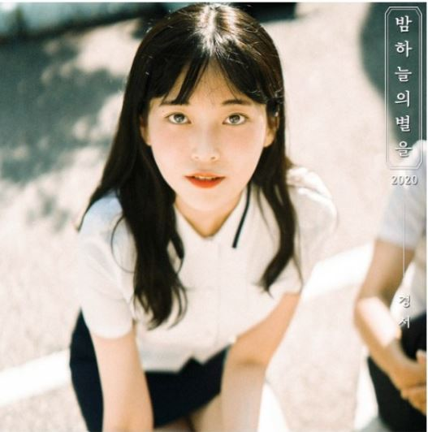
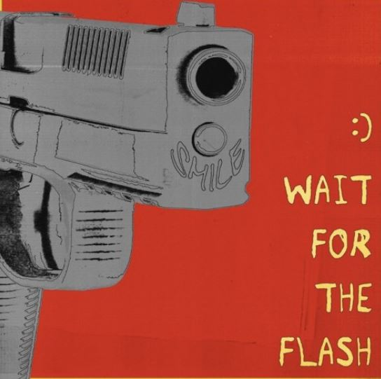
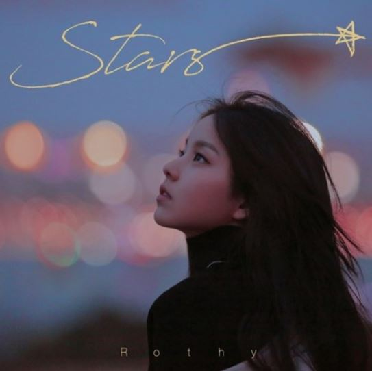
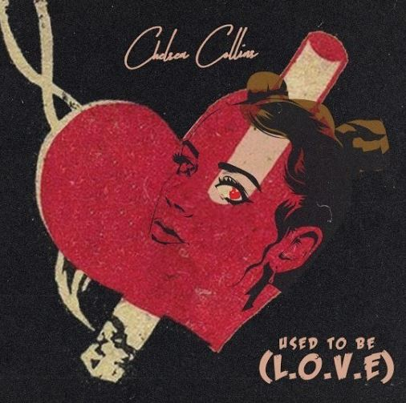

Playlist
*앨범 사진을 누르면 유튜브로 음악을 들을 수 있습니다*
경서 - 밤하늘의 별을

작사: 강봄 | 작곡: 강봄 | 2020-11-14
"양정승의 밤하늘의 별을" 노래를 리메이크한 곡이다.
좋아하는 사람을 처음 만난 순간부터 현재까지의 마음을 가사로 표현한 곡이다.
"많고 많은 사람 중에 너를 만나서 행복하고 싶어"
기리보이 - 우리서로사랑하지는말자

작사: 기리보이 | 작곡: 기리보이, 바이빈 | 2020-10-04
친구로 지내는 남녀가 서로 사랑하지만, 이별의 두려움으로 사랑하지 말자는 애틋한 마음을 표현한 곡이다.
사랑하지만, 사랑하고 싶지 않은 이중적인 마음을 잘 표현해냈다.
"너가 날 떠나면 나는 아무것도 없기에 편한 척을 하면서 친구들과 함께 섞이네"
로시 (Rothy) - Stars

작사: 김이나, 원태연 | 작곡: 신승훈 | 2017-11-09
지치고 힘든 삶을 살아가고 있는 사람들을 위로해주는 곡이다.
가끔 내가 잘하고 있는지 모를 때, 들으면 위안이 되고 가사가 예쁘다.
"울고 싶을 땐 울어버리고 웃고 싶지 않을 때는 웃지 마"
Chelsea Collins - Used To Be (L.O.V.E.)

작곡: Bert Kaempfert, Chelsea Collins, Milt Gabler | 2020-03-27
멀어지는 연인사이를 표현한 곡이다.
LOVE의 앞자리를 이어가며 가사를 썼다. 이를 사랑으로 표현하는 것이 아니라, 연인의 잘못된 행동으로 표현했다.
"Cause love's not what it used to be"
미란이, 먼치맨, Khundi Panda, 머쉬베놈 - VVS (Feat. JUSTHIS) (Prod. GroovyRoom)
작사: 저스디스(JUSTHIS), 그루비룸(GroovyRoom), 식케이 (Sik-K), 미란이(Mirani),
먼치맨, 쿤디판다(Khundi Panda), 머쉬베놈 |
작곡: 작곡 그루비룸(GroovyRoom), 저스디스(JUSTHIS), 식케이 (Sik-K) | 2020-11-21
쇼미더머니9에서 음원배틀로 나온 곡이다.
자신의 가난과 삶을 밝히며 현재 자신의 빛나고 멋진 모습을 잘 밝혔다.
"보여줘야겠어 내가 망할 거랬던 놈들에게도 내가 잘될 거라 했던 너에게도 다 할게 최선"